Kurzfassung zum Buch
Wir können uns die Zukunft leisten
Das Wichtigste aus dem Buch „Wir können uns die Zukunft leisten“ auf 21 Seiten: was die Reform jedem bringt, wer mehr zahlt und wie der Staat schuldenfrei wird. Als PDF 21 Seiten, 1,9 MB.
RT Z U M S TA 72 vcohenn 1h0ab0en Mens hr Geld me eform. als ohne R 100. von te 67 Gegen heu M U T Z U R Z U K U N F T · K U R Z FA S S U N G Wir können uns die Zukunft leisten Wie die meisten mehr Geld behalten, der Staat schuldenfrei wird und Deutschland aufblüht +604 € +1.373 € ab 2038 im Monat für im Monat für eine sinken die Steuern für einen Facharbeiter Familie mit zwei Kindern alle, im mittleren Fall 21 SEITEN, DIE ALLES VERÄNDERN KÖNNEN Tomas Hecker · November 2026
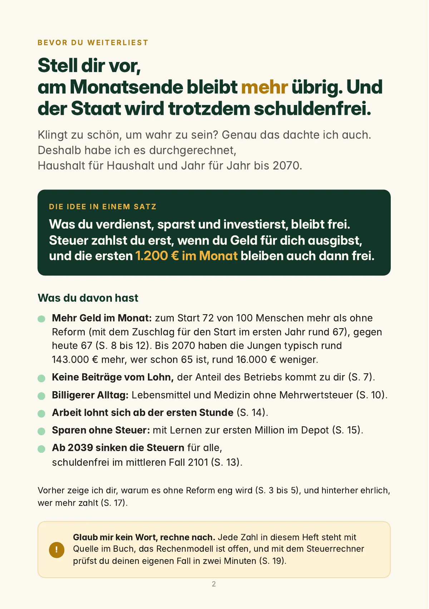
B E VO R D U W E I T E R L I E S T Stell dir vor, am Monatsende bleibt mehr übrig. Und der Staat wird trotzdem schuldenfrei. Klingt zu schön, um wahr zu sein? Genau das dachte ich auch. Deshalb habe ich es durchgerechnet, Haushalt für Haushalt und Jahr für Jahr bis 2070. D I E I D E E I N E I N E M SAT Z Was du verdienst, sparst und investierst, bleibt frei. Steuer zahlst du erst, wenn du Geld für dich ausgibst, und die ersten 1.200 € im Monat bleiben auch dann frei. Was du davon hast Mehr Geld im Monat: zum Start 72 von 100 Menschen mehr als ohne Reform (mit dem Zuschlag für den Start im ersten Jahr rund 67), gegen heute 67 (S. 8 bis 12). Bis 2070 haben die Jungen typisch rund 148.000 € mehr, wer schon 65 ist, rund 15.000 € weniger. Keine Beiträge vom Lohn, der Anteil des Betriebs kommt zu dir (S. 7). Billigerer Alltag: Lebensmittel und Medizin ohne Mehrwertsteuer (S. 10). Arbeit lohnt sich ab der ersten Stunde (S. 14). Sparen ohne Steuer: mit Lernen zur ersten Million im Depot (S. 15). Ab 2038 sinken die Steuern für alle, schuldenfrei im mittleren Fall 2095 (S. 13). Vorher zeige ich dir, warum es ohne Reform eng wird (S. 3 bis 5), und hinterher ehrlich, wer mehr zahlt (S. 17). Glaub mir kein Wort, rechne nach. Jede Zahl in diesem Heft steht mit ! Quelle im Buch, das Rechenmodell ist offen, und mit dem Steuerrechner prüfst du deinen eigenen Fall in zwei Minuten (S. 19). 2
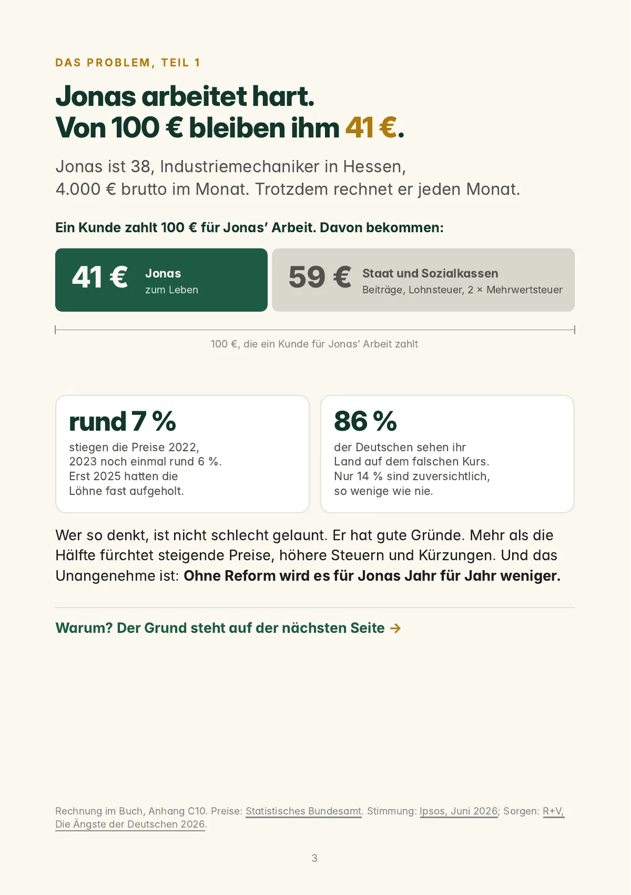
DA S P R O B L E M , T E I L 1 Jonas arbeitet hart. Von 100 € bleiben ihm 41 €. Jonas ist 38, Industriemechaniker in Hessen, 4.000 € brutto im Monat. Trotzdem rechnet er jeden Monat. Ein Kunde zahlt 100 € für Jonas’ Arbeit. Davon bekommen: 41 € Jonas zum Leben 59 € Staat und Sozialkassen Beiträge, Lohnsteuer, 2 × Mehrwertsteuer 100 €, die ein Kunde für Jonas’ Arbeit zahlt rund 7 % 86 % stiegen die Preise 2022, der Deutschen sehen ihr 2023 noch einmal rund 6 %. Land auf dem falschen Kurs. Erst 2025 hatten die Nur 14 % sind zuversichtlich, Löhne fast aufgeholt. so wenige wie nie. Wer so denkt, ist nicht schlecht gelaunt. Er hat gute Gründe. Mehr als die Hälfte fürchtet steigende Preise, höhere Steuern und Kürzungen. Und das Unangenehme ist: Ohne Reform wird es für Jonas Jahr für Jahr weniger. Warum? Der Grund steht auf der nächsten Seite → Rechnung im Buch, Anhang C10. Preise: Statistisches Bundesamt. Stimmung: Ipsos, Juni 2026; Sorgen: R+V, Die Ängste der Deutschen 2026. 3
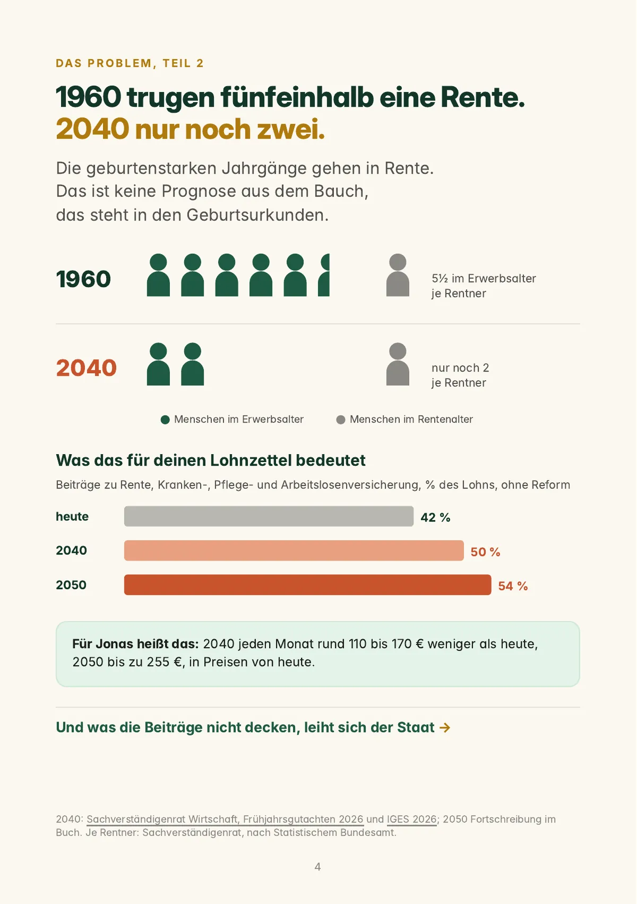
DA S P R O B L E M , T E I L 2 1960 trugen fünfeinhalb eine Rente. 2040 nur noch zwei. Die geburtenstarken Jahrgänge gehen in Rente. Das ist keine Prognose aus dem Bauch, das steht in den Geburtsurkunden. 1960 5½ im Erwerbsalter je Rentner 2040 nur noch 2 je Rentner Menschen im Erwerbsalter Menschen im Rentenalter Was das für deinen Lohnzettel bedeutet Beiträge zu Rente, Kranken-, Pflege- und Arbeitslosenversicherung, % des Lohns, ohne Reform heute 42 % 2040 50 % 2050 54 % Für Jonas heißt das: 2040 jeden Monat rund 110 bis 170 € weniger als heute, 2050 bis zu 255 €, in Preisen von heute. Und was die Beiträge nicht decken, leiht sich der Staat → 2040: Sachverständigenrat Wirtschaft, Frühjahrsgutachten 2026 und IGES 2026; 2050 Fortschreibung im Buch. Je Rentner: Sachverständigenrat, nach Statistischem Bundesamt. 4
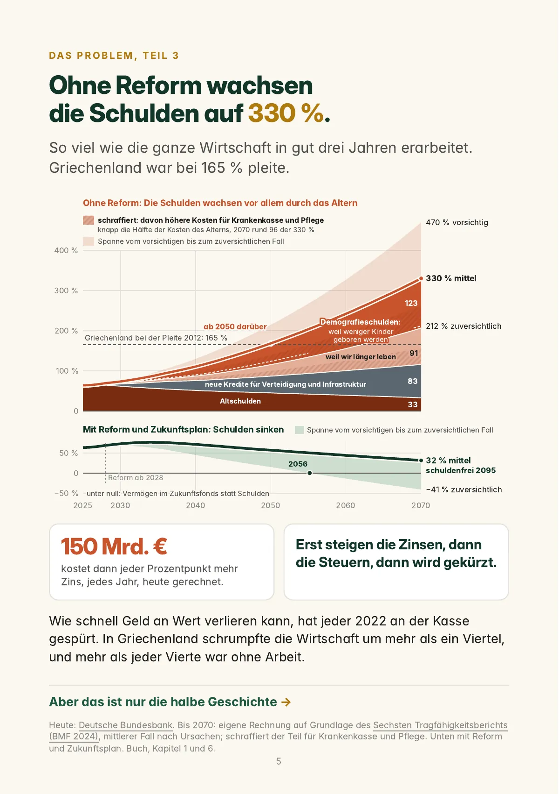
DA S P R O B L E M , T E I L 3 Ohne Reform wachsen die Schulden auf 330 %. So viel wie die ganze Wirtschaft in gut drei Jahren erarbeitet. Griechenland war bei 165 % pleite. Ohne Reform: Die Schulden wachsen vor allem durch das Altern schraffiert: davon höhere Kosten für Krankenkasse und Pflege 470 % vorsichtig knapp die Hälfte der Kosten des Alterns, 2070 rund 96 der 330 % Spanne vom vorsichtigen bis zum zuversichtlichen Fall 400 % 330 % mittel 300 % 123 ab 2050 darüber Demografieschulden: 212 % zuversichtlich 200 % weil weniger Kinder Griechenland bei der Pleite 2012: 165 % geboren werden weil wir länger leben 91 100 % neue Kredite für Verteidigung und Infrastruktur 83 Altschulden 33 0 Mit Reform und Zukunftsplan: Schulden sinken Spanne vom vorsichtigen bis zum zuversichtlichen Fall 50 % 2055 32 % mittel 0 schuldenfrei 2095 Reform ab 2028 −50 % unter null: Vermögen im Zukunftsfonds statt Schulden −42 % zuversichtlich 2025 2030 2040 2050 2060 2070 150 Mrd. € Erst steigen die Zinsen, dann die Steuern, dann wird gekürzt. kostet dann jeder Prozentpunkt mehr Zins, jedes Jahr, heute gerechnet. Wie schnell Geld an Wert verlieren kann, hat jeder 2022 an der Kasse gespürt. In Griechenland schrumpfte die Wirtschaft um mehr als ein Viertel, und mehr als jeder Vierte war ohne Arbeit. Aber das ist nur die halbe Geschichte → Heute: Deutsche Bundesbank. Bis 2070: eigene Rechnung auf Grundlage des Sechsten Tragfähigkeitsberichts (BMF 2024), mittlerer Fall nach Ursachen; schraffiert der Teil für Krankenkasse und Pflege. Unten mit Reform und Zukunftsplan. Buch, Kapitel 1 und 6. 5
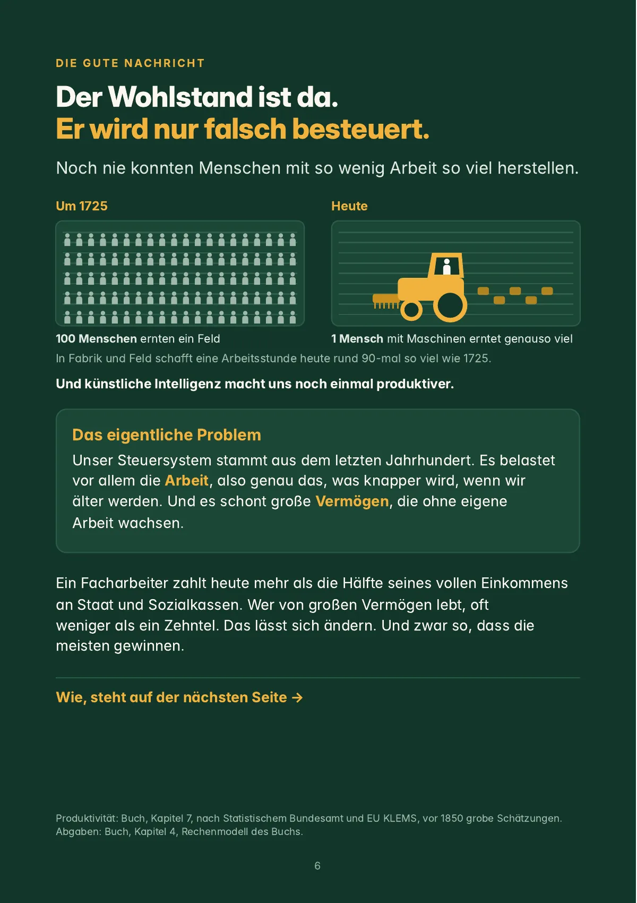
D I E G U T E N AC H R I C H T Der Wohlstand ist da. Er wird nur falsch besteuert. Noch nie konnten Menschen mit so wenig Arbeit so viel herstellen. Um 1725 Heute 100 Menschen ernten ein Feld 1 Mensch mit Maschinen erntet genauso viel In Fabrik und Feld schafft eine Arbeitsstunde heute rund 90-mal so viel wie 1725. Und künstliche Intelligenz macht uns noch einmal produktiver. Das eigentliche Problem Unser Steuersystem stammt aus dem letzten Jahrhundert. Es belastet vor allem die Arbeit, also genau das, was knapper wird, wenn wir älter werden. Und es schont große Vermögen, die ohne eigene Arbeit wachsen. Ein Facharbeiter zahlt heute mehr als die Hälfte seines vollen Einkommens an Staat und Sozialkassen. Wer von großen Vermögen lebt, oft weniger als ein Zehntel. Das lässt sich ändern. Und zwar so, dass die meisten gewinnen. Wie, steht auf der nächsten Seite → Produktivität: Buch, Kapitel 7, nach Statistischem Bundesamt und EU KLEMS, vor 1850 grobe Schätzungen. Abgaben: Buch, Kapitel 4, Rechenmodell des Buchs. 6
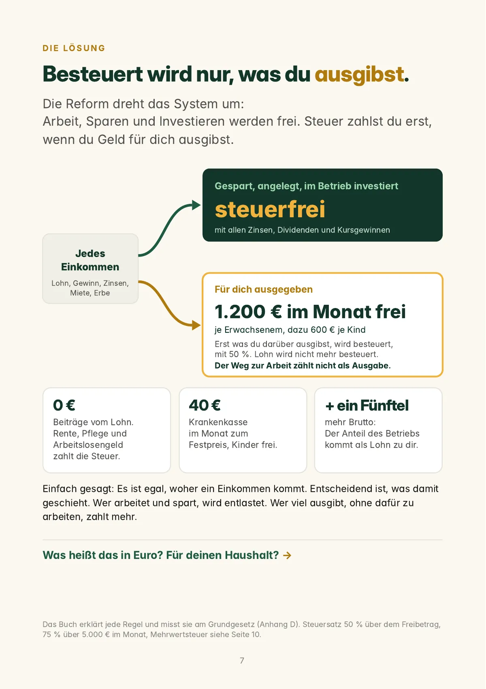
DIE LÖSUNG Besteuert wird nur, was du ausgibst. Die Reform dreht das System um: Arbeit, Sparen und Investieren werden frei. Steuer zahlst du erst, wenn du Geld für dich ausgibst. Gespart, angelegt, im Betrieb investiert steuerfrei mit allen Zinsen, Dividenden und Kursgewinnen Jedes Einkommen Lohn, Gewinn, Zinsen, Miete, Erbe Für dich ausgegeben 1.200 € im Monat frei je Erwachsenem, dazu 600 € je Kind Erst was du darüber ausgibst, wird besteuert, mit 50 %. Lohn wird nicht mehr besteuert. Der Weg zur Arbeit zählt nicht als Ausgabe. 0€ 40 € + ein Fünftel Beiträge vom Lohn. Krankenkasse mehr Brutto: Rente, Pflege und im Monat zum Der Anteil des Betriebs Arbeitslosengeld Festpreis, Kinder frei. kommt als Lohn zu dir. zahlt die Steuer. Einfach gesagt: Es ist egal, woher ein Einkommen kommt. Entscheidend ist, was damit geschieht. Wer arbeitet und spart, wird entlastet. Wer viel ausgibt, ohne dafür zu arbeiten, zahlt mehr. Was heißt das in Euro? Für deinen Haushalt? → Das Buch erklärt jede Regel und misst sie am Grundgesetz (Anhang D). Steuersatz 50 % über dem Freibetrag, 75 % über 5.000 € Einkauf im Monat (samt Steuer 8.800 €), Mehrwertsteuer siehe Seite 10. 7
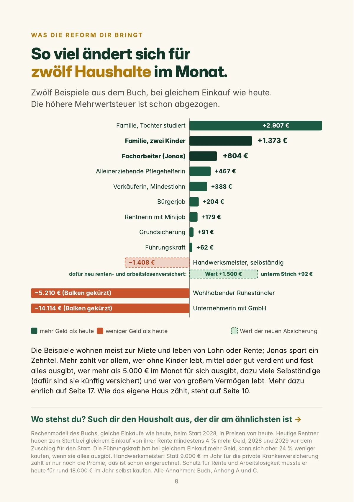
WA S D I E R E F O R M D I R B R I N GT So viel ändert sich für zwölf Haushalte im Monat. Zwölf Beispiele aus dem Buch, bei gleichem Einkauf wie heute. Die höhere Mehrwertsteuer ist schon abgezogen. Familie, Tochter studiert +2.907 € Familie, zwei Kinder +1.373 € Facharbeiter (Jonas) +604 € Alleinerziehende Pflegehelferin +467 € Verkäuferin, Mindestlohn +388 € Bürgerjob +204 € Rentnerin mit Minijob +179 € Grundsicherung +91 € −1.408 € Handwerksmeister, selbständig dafür neu renten- und arbeitslosenversichert: Wert +1.500 € unterm Strich +92 € −1.560 € Führungskraft −6.796 € (Balken gekürzt) Wohlhabender Ruheständler −28.602 € (Balken gekürzt) Unternehmerin mit GmbH mehr Geld als heute weniger Geld als heute Wert der neuen Absicherung Die Beispiele wohnen meist zur Miete und leben von Lohn oder Rente; Jonas spart ein Zehntel. Mehr zahlt vor allem, wer ohne Kinder lebt, mittel oder gut verdient und fast alles ausgibt, wer im Monat für mehr als 5.000 € für sich einkauft, dazu viele Selbständige (dafür sind sie künftig versichert) und wer von großem Vermögen lebt. Mehr dazu ehrlich auf Seite 17. Wie das eigene Haus zählt, steht auf Seite 10. Wo stehst du? Such dir den Haushalt aus, der dir am ähnlichsten ist → Rechenmodell des Buchs, gleiche Einkäufe wie heute, beim Start 2028, in Preisen von heute. Heutige Rentner haben zum Start bei gleichem Einkauf von ihrer Rente mindestens 4 % mehr Geld, 2028 und 2029 vor dem Zuschlag für den Start. Führungskraft: Vom Teil über 5.000 € Einkauf im Monat gehen 75 % an die Steuer, gibt sie alles aus, kann sie sich 31 % weniger kaufen. Handwerksmeister: Statt 9.000 € im Jahr für die private Krankenversicherung zahlt er nur noch die Prämie, schon eingerechnet. Schutz für Rente und Arbeitslosigkeit müsste er heute für rund 18.000 € im Jahr selbst kaufen. Alle Annahmen: Buch, Anhang A und C. 8
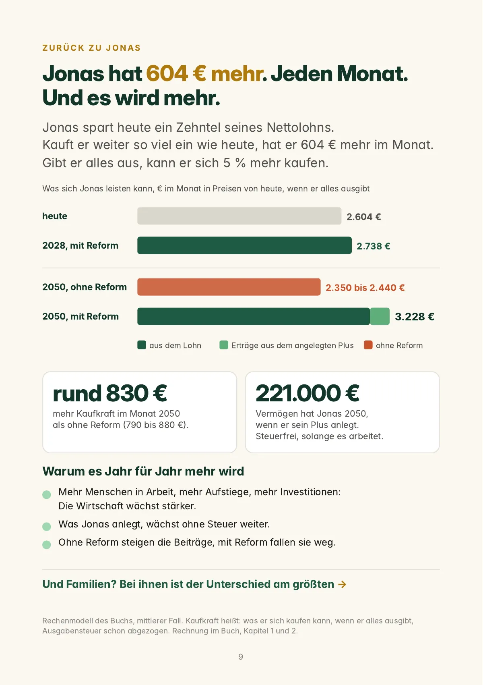
ZURÜCK ZU JONAS Jonas hat 604 € mehr. Jeden Monat. Und es wird mehr. Jonas spart heute ein Zehntel seines Nettolohns. Kauft er weiter so viel ein wie heute, hat er 604 € mehr im Monat. Gibt er alles aus, kann er sich 5 % mehr kaufen. Was sich Jonas leisten kann, € im Monat in Preisen von heute, wenn er alles ausgibt heute 2.604 € 2028, mit Reform 2.738 € 2050, ohne Reform 2.350 bis 2.440 € 2050, mit Reform 3.252 € aus dem Lohn Erträge aus dem angelegten Plus ohne Reform rund 860 € 221.000 € mehr Kaufkraft im Monat 2050 Vermögen hat Jonas 2050, als ohne Reform (810 bis 900 €). wenn er sein Plus anlegt. Steuerfrei, solange es arbeitet. Warum es Jahr für Jahr mehr wird Mehr Menschen in Arbeit, mehr Aufstiege, mehr Investitionen: Die Wirtschaft wächst stärker. Was Jonas anlegt, wächst ohne Steuer weiter. Ohne Reform steigen die Beiträge, mit Reform fallen sie weg. Und Familien? Bei ihnen ist der Unterschied am größten → Rechenmodell des Buchs, mittlerer Fall. Kaufkraft heißt: was er sich kaufen kann, wenn er alles ausgibt, Ausgabensteuer schon abgezogen. Rechnung im Buch, Kapitel 1 und 2. 9
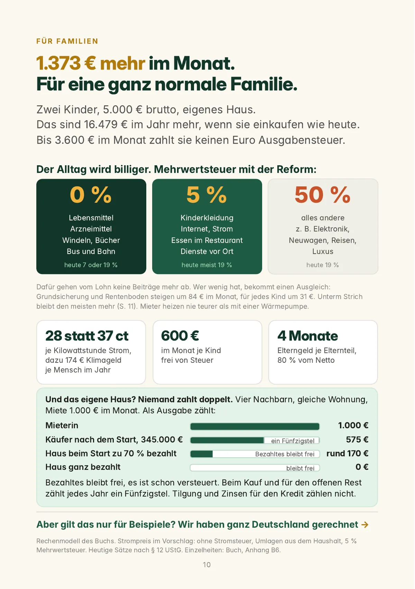
F Ü R FA M I L I E N 1.373 € mehr im Monat. Für eine ganz normale Familie. Zwei Kinder, 5.000 € brutto, eigenes Haus. Das sind 16.479 € im Jahr mehr, wenn sie einkaufen wie heute. Bis 3.600 € im Monat zahlt sie keinen Euro Ausgabensteuer. Der Alltag wird billiger. Mehrwertsteuer mit der Reform: 0% 5% 50 % Lebensmittel Kinderkleidung alles andere Arzneimittel Internet, Strom z. B. Elektronik, Windeln, Bücher Essen im Restaurant Neuwagen, Reisen, Bus und Bahn Dienste vor Ort Luxus heute 7 oder 19 % heute meist 19 % heute 19 % Dafür gehen vom Lohn keine Beiträge mehr ab. Wer wenig hat, bekommt einen Ausgleich: Grundsicherung und Rentenboden steigen um 84 € im Monat, für jedes Kind um 31 €. Unterm Strich bleibt den meisten mehr (S. 11). Mieter heizen nie teurer als mit einer Wärmepumpe. 28 statt 37 ct 600 € 4 Monate je Kilowattstunde Strom, im Monat je Kind Elterngeld je Elternteil, dazu 174 € Klimageld frei von Steuer 80 % vom Netto je Mensch im Jahr Und das eigene Haus? Niemand zahlt doppelt. Vier Nachbarn, gleiche Wohnung, Miete 1.000 € im Monat. Als Ausgabe zählt: Mieterin 1.000 € Käufer nach dem Start, 345.000 € ein Fünfzigstel 575 € Haus beim Start zu 70 % bezahlt Bezahltes bleibt frei rund 170 € Haus ganz bezahlt bleibt frei 0€ Bezahltes bleibt frei, es ist schon versteuert. Beim Kauf und für den offenen Rest zählt jedes Jahr ein Fünfzigstel. Tilgung und Zinsen für den Kredit zählen nicht. Aber gilt das nur für Beispiele? Wir haben ganz Deutschland gerechnet → Rechenmodell des Buchs. Strompreis im Vorschlag: ohne Stromsteuer, Umlagen aus dem Haushalt, 5 % Mehrwertsteuer. Heutige Sätze nach § 12 UStG. Einzelheiten: Buch, Anhang B6. 10
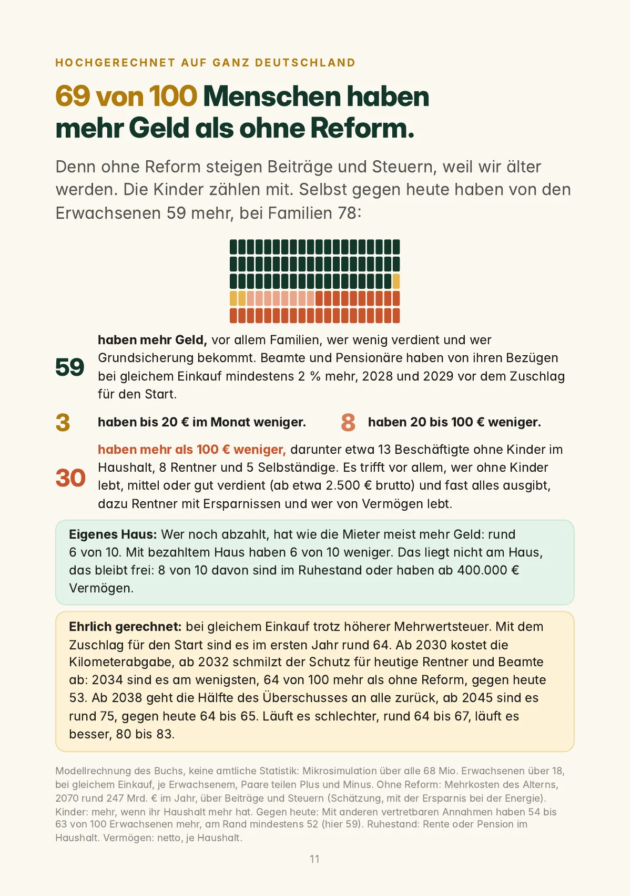
H O C H G E R E C H N E T A U F GA N Z D E U T S C H L A N D 72 von 100 Menschen haben mehr Geld als ohne Reform. Denn ohne Reform steigen Beiträge und Steuern, weil wir älter werden. Die Kinder zählen mit. Selbst gegen heute haben von den Erwachsenen 64 mehr, bei Familien 80: haben mehr Geld, vor allem Familien, wer wenig verdient und wer 64 Grundsicherung bekommt. Beamte und Pensionäre haben von ihren Bezügen bei gleichem Einkauf mindestens 2 % mehr, 2028 und 2029 vor dem Zuschlag für den Start. 2 haben bis 20 € im Monat weniger. 6 haben 20 bis 100 € weniger. haben mehr als 100 € weniger, darunter etwa 11 Beschäftigte ohne Kinder im Haushalt, 8 Rentner und 5 Selbständige. Es trifft vor allem, wer ohne Kinder 28 lebt, mittel oder gut verdient (ab etwa 2.500 € brutto) und fast alles ausgibt, dazu Rentner mit Ersparnissen und wer von Vermögen lebt. Eigenes Haus: Wer noch abzahlt, hat wie die Mieter meist mehr Geld: rund 2 von 3. Mit bezahltem Haus haben fast 6 von 10 weniger. Das liegt nicht am Haus, das bleibt frei: 8 von 10 davon sind im Ruhestand oder haben ab 400.000 € Vermögen. Ehrlich gerechnet: bei gleichem Einkauf trotz höherer Mehrwertsteuer. Mit dem Zuschlag für den Start sind es im ersten Jahr rund 67. Ab 2030 kostet die Kilometerabgabe, ab 2032 schmilzt der Schutz für heutige Rentner und Beamte ab: 2037 sind es am wenigsten, 63 von 100 mehr als ohne Reform, gegen heute 53. Ab 2038 geht die Hälfte des Überschusses an alle zurück, ab 2045 sind es rund 72, gegen heute 61 bis 64. Läuft es schlechter, rund 62 bis 63, läuft es besser, 77 bis 81. Modellrechnung des Buchs, keine amtliche Statistik: Mikrosimulation über alle 68 Mio. Erwachsenen über 18, bei gleichem Einkauf, je Erwachsenem, Paare teilen Plus und Minus. Ohne Reform: Mehrkosten des Alterns, 2070 rund 247 Mrd. € im Jahr, über Beiträge und Steuern (Schätzung, mit der Ersparnis bei der Energie). Kinder: mehr, wenn ihr Haushalt mehr hat. Gegen heute: Mit anderen vertretbaren Annahmen haben 56 bis 66 von 100 Erwachsenen mehr, mit dem Zuschlag für den Start (hier 62, ohne ihn 64). Ruhestand: Rente oder Pension im Haushalt. Vermögen: netto, je Haushalt. 11
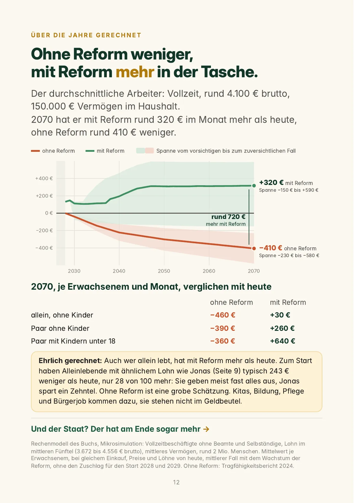
ÜBER DIE JAHRE GERECHNET Ohne Reform weniger, mit Reform mehr in der Tasche. Der durchschnittliche Arbeiter: Vollzeit, rund 4.100 € brutto, 150.000 € Vermögen im Haushalt. 2070 hat er mit Reform rund 300 € im Monat mehr als heute, ohne Reform rund 410 € weniger. ohne Reform mit Reform Spanne vom vorsichtigen bis zum zuversichtlichen Fall +400 € +300 € mit Reform Spanne −160 € bis +590 € +200 € 0€ rund 710 € mehr mit Reform −200 € −400 € −410 € ohne Reform Spanne −230 € bis −580 € 2030 2040 2050 2060 2070 2070, je Erwachsenem und Monat, verglichen mit heute ohne Reform mit Reform allein, ohne Kinder −460 € +20 € Paar ohne Kinder −390 € +250 € Paar mit Kindern unter 18 −360 € +630 € Ehrlich gerechnet: Auch wer allein lebt, hat mit Reform mehr als heute. Zum Start haben Alleinlebende mit ähnlichem Lohn wie Jonas (Seite 9) typisch 243 € weniger als heute, nur 28 von 100 mehr: Sie geben meist fast alles aus, Jonas spart ein Zehntel. Ohne Reform ist eine grobe Schätzung. Kitas, Bildung, Pflege und Bürgerjob kommen dazu, sie stehen nicht im Geldbeutel. Und der Staat? Der hat am Ende sogar mehr → Rechenmodell des Buchs, Mikrosimulation: Vollzeitbeschäftigte ohne Beamte und Selbständige, Lohn im mittleren Fünftel (3.672 bis 4.556 € brutto), mittleres Vermögen, rund 2 Mio. Menschen. Mittelwert je Erwachsenem, bei gleichem Einkauf, Preise und Löhne von heute, mittlerer Fall mit dem Wachstum der Reform, ohne den Zuschlag für den Start 2028 und 2029. Ohne Reform: Tragfähigkeitsbericht 2024. 12
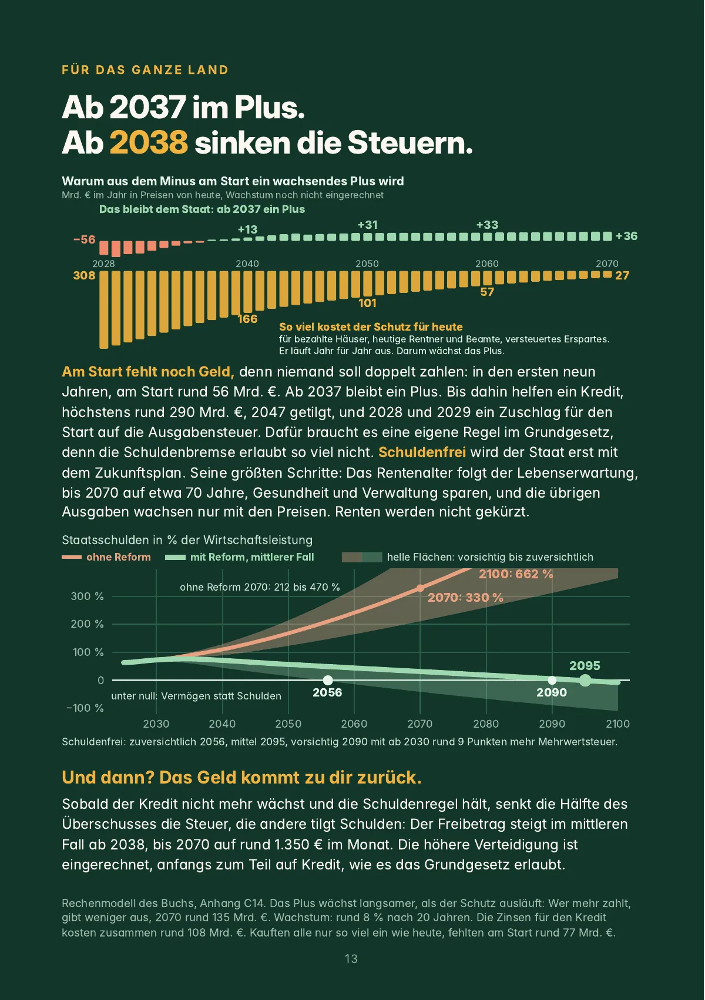
F Ü R DA S GA N Z E L A N D Ab 2038 im Plus, und die Steuern sinken. Warum aus dem Minus am Start ein wachsendes Plus wird Mrd. € im Jahr in Preisen von heute, Wachstum noch nicht eingerechnet Das bleibt dem Staat: ab 2038 ein Plus +10 +28 +29 −60 +33 2028 2040 2050 2060 2070 308 27 57 101 166 So viel kostet der Schutz für heute für bezahlte Häuser, heutige Rentner und Beamte, versteuertes Erspartes. Er läuft Jahr für Jahr aus. Darum wächst das Plus. Am Start fehlt noch Geld, denn niemand soll doppelt zahlen: in den ersten zehn Jahren, am Start rund 60 Mrd. €. Ab 2038 bleibt ein Plus. Bis dahin helfen ein Kredit, höchstens rund 310 Mrd. €, 2048 getilgt, und 2028 und 2029 ein Zuschlag für den Start auf die Ausgabensteuer. Dafür braucht es eine eigene Regel im Grundgesetz, denn die Schuldenbremse erlaubt so viel nicht. Schuldenfrei wird der Staat erst mit dem Zukunftsplan. Seine größten Schritte: Das Rentenalter folgt der Lebenserwartung, bis 2070 auf etwa 70 Jahre, Gesundheit und Verwaltung sparen, und die übrigen Ausgaben wachsen nur mit den Preisen. Renten werden nicht gekürzt. Staatsschulden in % der Wirtschaftsleistung ohne Reform mit Reform, mittlerer Fall helle Flächen: vorsichtig bis zuversichtlich 2100: 662 % ohne Reform 2070: 212 bis 470 % 300 % 2070: 330 % 200 % 100 % 2095 0 unter null: Vermögen statt Schulden 2055 2090 −100 % 2030 2040 2050 2060 2070 2080 2090 2100 Schuldenfrei: zuversichtlich 2055, mittel 2095, vorsichtig 2090 mit ab 2030 rund 9 Punkten mehr Mehrwertsteuer. Und dann? Das Geld kommt zu dir zurück. Sobald der Kredit nicht mehr wächst und die Schuldenregel hält, senkt die Hälfte des Überschusses die Steuer, die andere tilgt Schulden: Der Freibetrag steigt im mittleren Fall ab 2038, bis 2070 auf rund 1.350 € im Monat. Die höhere Verteidigung ist eingerechnet, anfangs zum Teil auf Kredit, wie es das Grundgesetz erlaubt. Rechenmodell des Buchs, Anhang C14. Das Plus wächst langsamer, als der Schutz ausläuft: Wer mehr zahlt, gibt weniger aus, 2070 rund 135 Mrd. €. Wachstum: rund 9 % nach 20 Jahren. Die Zinsen für den Kredit kosten zusammen rund 120 Mrd. €. Kauften alle nur so viel ein wie heute, fehlten am Start rund 80 Mrd. €. 13
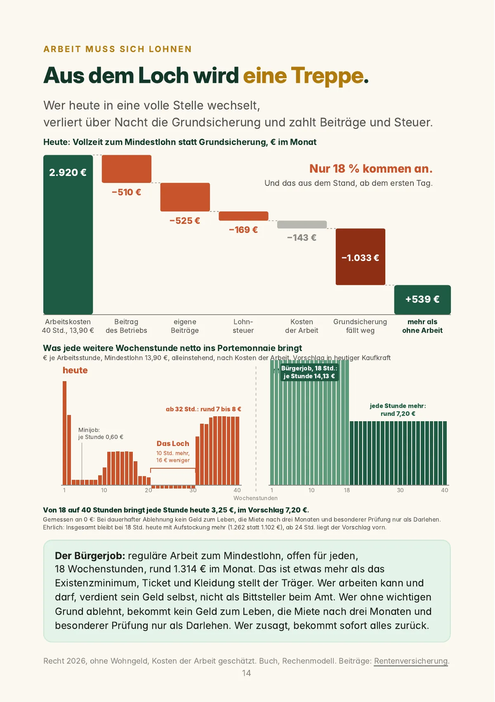
ARBEIT MUSS SICH LOHNEN Aus dem Loch wird eine Treppe. Wer heute in eine volle Stelle wechselt, verliert über Nacht die Grundsicherung und zahlt Beiträge und Steuer. Heute: Vollzeit zum Mindestlohn statt Grundsicherung, € im Monat 2.920 € Nur 18 % kommen an. Und das aus dem Stand, ab dem ersten Tag. −510 € −525 € −169 € −143 € −1.033 € +539 € Arbeitskosten Beitrag eigene Lohn- Kosten Grundsicherung mehr als 40 Std., 13,90 € des Betriebs Beiträge steuer der Arbeit fällt weg ohne Arbeit Was jede weitere Wochenstunde netto ins Portemonnaie bringt € je Arbeitsstunde, Mindestlohn 13,90 €, alleinstehend, nach Kosten der Arbeit, Vorschlag in heutiger Kaufkraft heute im Bürgerjob, Vorschlag 18 Std.: je Stunde 14,13 € ab 32 Std.: rund 7 bis 8 € jede Stunde mehr: rund 7,20 € Minijob: je Stunde 0,60 € Das Loch 10 Std. mehr, 16 € weniger 1 10 20 30 40 1 10 18 30 40 Wochenstunden Von 18 auf 40 Stunden bringt jede Stunde heute 3,25 €, im Vorschlag 7,20 €. Gemessen an 0 €: Bei dauerhafter Ablehnung kein Geld zum Leben, die Miete nach drei Monaten und besonderer Prüfung nur als Darlehen. Ehrlich: Insgesamt bleibt bei 18 Std. heute mit Aufstockung mehr (1.262 statt 1.102 €), ab 24 Std. liegt der Vorschlag vorn. Der Bürgerjob: reguläre Arbeit zum Mindestlohn, offen für jeden, 18 Wochenstunden, rund 1.314 € im Monat. Das ist etwas mehr als das Existenzminimum, Ticket und Kleidung stellt der Träger. Wer arbeiten kann und darf, verdient sein Geld selbst, nicht als Bittsteller beim Amt. Wer ohne wichtigen Grund ablehnt, bekommt kein Geld zum Leben, die Miete nach drei Monaten und besonderer Prüfung nur als Darlehen. Wer zusagt, bekommt sofort alles zurück. Recht 2026, ohne Wohngeld, Kosten der Arbeit geschätzt. Buch, Rechenmodell. Beiträge: Rentenversicherung. 14
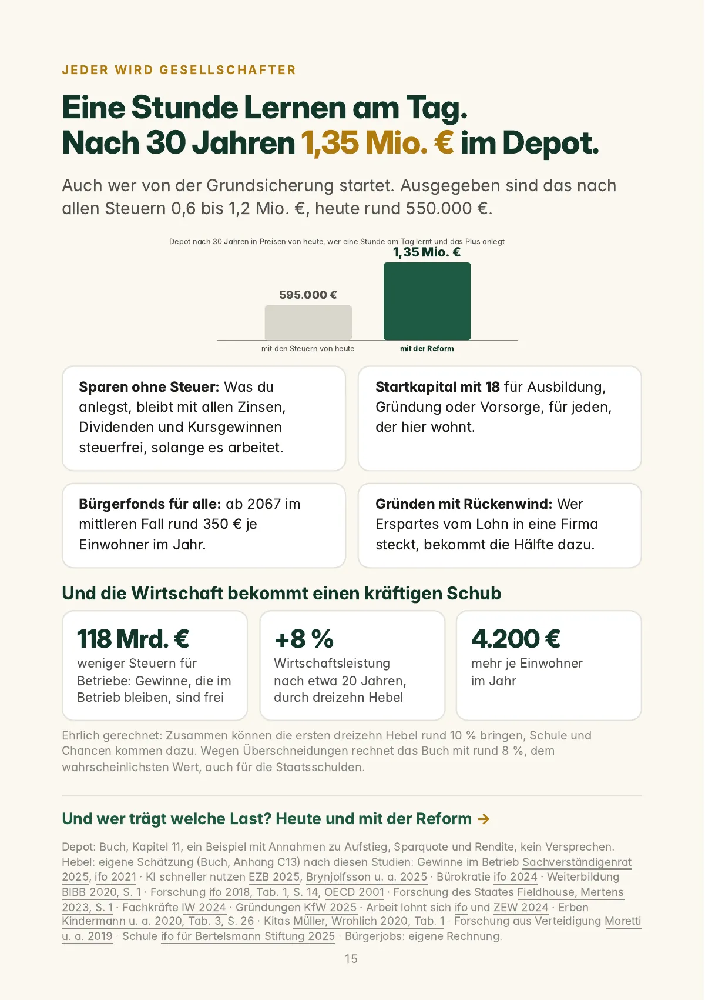
JEDER WIRD GESELLSCHAFTER Eine Stunde Lernen am Tag. Nach 30 Jahren 1,35 Mio. € im Depot. Auch wer von der Grundsicherung startet. Ausgegeben sind das nach allen Steuern 0,6 bis 1,2 Mio. €, heute rund 550.000 €. Depot nach 30 Jahren in Preisen von heute, wer eine Stunde am Tag lernt und das Plus anlegt 1,35 Mio. € 595.000 € mit den Steuern von heute mit der Reform Sparen ohne Steuer: Was du Startkapital mit 18 für Ausbildung, anlegst, bleibt mit allen Zinsen, Gründung oder Vorsorge, für jeden, Dividenden und Kursgewinnen der hier wohnt. steuerfrei, solange es arbeitet. Bürgerfonds für alle: ab 2067 im Gründen mit Rückenwind: Wer mittleren Fall rund 350 € je Erspartes vom Lohn in eine Firma Einwohner im Jahr. steckt, bekommt die Hälfte dazu. Und die Wirtschaft bekommt einen kräftigen Schub 118 Mrd. € +9 % 4.200 € weniger Steuern für Wirtschaftsleistung mehr je Einwohner Betriebe: Gewinne, die im nach etwa 20 Jahren, im Jahr Betrieb bleiben, sind frei durch dreizehn Hebel Ehrlich gerechnet: Zusammen können die ersten dreizehn Hebel rund 11 % bringen, Schule und Chancen kommen dazu. Wegen Überschneidungen rechnet das Buch mit rund 9 %, dem wahrscheinlichsten Wert, auch für die Staatsschulden. Und wer trägt welche Last? Heute und mit der Reform → Depot: Buch, Kapitel 11, ein Beispiel mit Annahmen zu Aufstieg, Sparquote und Rendite, kein Versprechen. Hebel: eigene Schätzung (Buch, Anhang C13) nach diesen Studien: Gewinne im Betrieb Sachverständigenrat 2025, ifo 2021 · KI schneller nutzen EZB 2025, Brynjolfsson u. a. 2025 · Bürokratie ifo 2024 · Weiterbildung BIBB 2020, S. 1 · Forschung ifo 2018, Tab. 1, S. 14, OECD 2001 · Forschung des Staates Fieldhouse, Mertens 2023, S. 1 · Fachkräfte IW 2024 · Gründungen KfW 2025 · Arbeit lohnt sich ifo und ZEW 2024 · Erben Kindermann u. a. 2020, Tab. 3, S. 26 · Kitas Müller, Wrohlich 2020, Tab. 1 · Forschung aus Verteidigung Moretti u. a. 2019 · Schule ifo für Bertelsmann Stiftung 2025 · Bürgerjobs: eigene Rechnung. 15
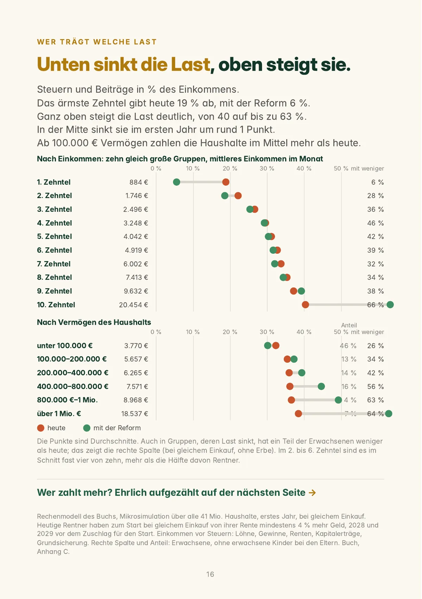
W E R T R ÄGT W E L C H E L A S T Unten sinkt die Last, oben steigt sie. Steuern und Beiträge in % des Einkommens. Das ärmste Zehntel gibt heute 19 % ab, mit der Reform 6 %. Ganz oben steigt die Last deutlich, von 40 auf bis zu 63 %. In der Mitte sinkt sie im ersten Jahr um rund 1 Punkt. Ab 100.000 € Vermögen zahlen die Haushalte im Mittel mehr als heute. Nach Einkommen: zehn gleich große Gruppen, mittleres Einkommen im Monat 0% 10 % 20 % 30 % 40 % 50 % mit weniger 1. Zehntel 884 € 6% 2. Zehntel 1.746 € 28 % 3. Zehntel 2.496 € 36 % 4. Zehntel 3.248 € 46 % 5. Zehntel 4.042 € 42 % 6. Zehntel 4.919 € 39 % 7. Zehntel 6.002 € 32 % 8. Zehntel 7.413 € 34 % 9. Zehntel 9.632 € 38 % 10. Zehntel 20.454 € 66 % Nach Vermögen des Haushalts Anteil 0% 10 % 20 % 30 % 40 % 50 % mit weniger unter 100.000 € 3.770 € 46 % 26 % 100.000–200.000 € 5.657 € 13 % 34 % 200.000–400.000 € 6.265 € 14 % 42 % 400.000–800.000 € 7.571 € 16 % 56 % 800.000 €–1 Mio. 8.968 € 4% 63 % über 1 Mio. € 18.537 € 7% 64 % heute mit der Reform Die Punkte sind Durchschnitte. Auch in Gruppen, deren Last sinkt, hat ein Teil der Erwachsenen weniger als heute; das zeigt die rechte Spalte (bei gleichem Einkauf, ohne Erbe). Im 2. bis 6. Zehntel sind es im Schnitt fast vier von zehn, mehr als die Hälfte davon Rentner. Wer zahlt mehr? Ehrlich aufgezählt auf der nächsten Seite → Rechenmodell des Buchs, Mikrosimulation über alle 41 Mio. Haushalte, erstes Jahr, bei gleichem Einkauf. Heutige Rentner haben zum Start bei gleichem Einkauf von ihrer Rente mindestens 4 % mehr Geld, 2028 und 2029 vor dem Zuschlag für den Start. Einkommen vor Steuern: Löhne, Gewinne, Renten, Kapitalerträge, Grundsicherung. Rechte Spalte und Anteil: Erwachsene, ohne erwachsene Kinder bei den Eltern. Buch, Anhang C. 16
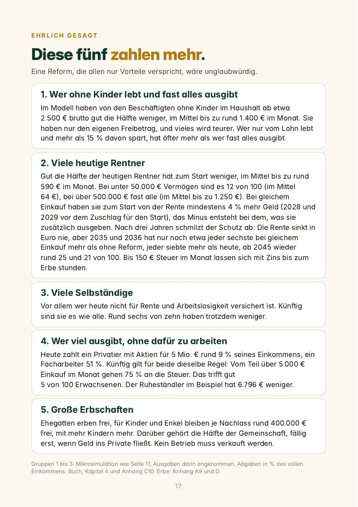
E H R L I C H G E S AGT Diese fünf zahlen mehr. Eine Reform, die allen nur Vorteile verspricht, wäre unglaubwürdig. 1. Wer ohne Kinder lebt und fast alles ausgibt Im Modell haben von den Beschäftigten ohne Kinder im Haushalt ab etwa 2.500 € brutto gut die Hälfte weniger, im Mittel bis zu rund 1.400 € im Monat. Sie haben nur den eigenen Freibetrag, und vieles wird teurer. Wer nur vom Lohn lebt und mehr als 15 % davon spart, hat öfter mehr als wer fast alles ausgibt. 2. Viele heutige Rentner Gut die Hälfte der heutigen Rentner hat zum Start weniger, im Mittel bis zu rund 590 € im Monat. Bei unter 50.000 € Vermögen sind es 12 von 100 (im Mittel 64 €), bei über 500.000 € fast alle (im Mittel bis zu 1.250 €). Bei gleichem Einkauf haben sie zum Start von der Rente mindestens 4 % mehr Geld (2028 und 2029 vor dem Zuschlag für den Start), das Minus entsteht bei dem, was sie zusätzlich ausgeben. Nach drei Jahren schmilzt der Schutz ab: Die Rente sinkt in Euro nie, aber 2035 und 2036 hat nur noch etwa jeder sechste bei gleichem Einkauf mehr als ohne Reform, jeder siebte mehr als heute, ab 2045 wieder rund 25 und 21 von 100. Bis 150 € Steuer im Monat lassen sich mit Zins bis zum Erbe stunden. 3. Viele Selbständige Vor allem wer heute nicht für Rente und Arbeitslosigkeit versichert ist. Künftig sind sie es wie alle. Rund sechs von zehn haben trotzdem weniger. 4. Wer viel ausgibt, ohne dafür zu arbeiten Heute zahlt ein Privatier mit Aktien für 5 Mio. € rund 9 % seines Einkommens, ein Facharbeiter 51 %. Künftig gilt für beide dieselbe Regel: Vom Teil über 5.000 € Einkauf im Monat gehen 75 % an die Steuer. Das trifft gut 5 von 100 Erwachsenen. Der Ruheständler im Beispiel hat 6.796 € weniger. 5. Große Erbschaften Ehegatten erben frei, für Kinder und Enkel bleiben je Nachlass rund 400.000 € frei, mit mehr Kindern mehr. Darüber gehört die Hälfte der Gemeinschaft, fällig erst, wenn Geld ins Private fließt. Kein Betrieb muss verkauft werden. Gruppen 1 bis 3: Mikrosimulation wie Seite 11, Ausgaben darin angenommen. Abgaben in % des vollen Einkommens: Buch, Kapitel 4 und Anhang C10. Erbe: Anhang A9 und D. 17
F R AG E N , D I E D U D I R J E T Z T S T E L L S T „Das kann doch nicht funktionieren, oder?“ Woher kommt das Geld, wenn Lohn steuerfrei wird? Aus dem, was für den eigenen Bedarf ausgegeben wird: aus dem Einkauf über dem Freibetrag, der höheren Mehrwertsteuer auf Nicht-Notwendiges und großen Erbschaften. Wer von Vermögen lebt, zahlt erstmals so viel wie wer arbeitet. Unterm Strich fehlt dem Staat in den ersten zehn Jahren Geld, am Start rund 60 Mrd. €, ab 2038 bleibt ein Überschuss, und er wächst Jahr für Jahr. 50 % Mehrwertsteuer, ist das nicht unsozial? Der Grundbedarf ist frei oder kostet 5 %, wer wenig hat, bekommt einen Ausgleich, und vom Lohn geht nichts mehr ab. Deshalb haben gerade kleine Einkommen am meisten mehr: die Alleinerziehende 17 % mehr Kaufkraft, die Verkäuferin 9 %. Ist das mit dem Grundgesetz vereinbar? Jede Regel ist im Buch daran gemessen, mit den Urteilen des Bundesverfassungsgerichts, etwa zum Erbrecht, zum Existenzminimum und zur Gleichbehandlung (Anhang D). Wo es Grenzen gibt, steht das dort auch. Wer hat das gerechnet, und kann ich dem trauen? Tomas Hecker rechnet seit mehr als 30 Jahren, was Energie- und Gebäudetechnik über ihre ganze Lebensdauer kostet und bringt. Das Rechenmodell ist ein Prototyp und noch nicht unabhängig geprüft. Gerade deshalb ist alles offen: jede Annahme mit Herleitung und Quelle, das Modell zum Nachrechnen und Ändern. Warum macht das dann niemand? Teile davon gibt es längst: Estland besteuert nur ausgeschüttete Gewinne, Baden-Württemberg nur den Boden. Zusammengedacht und durchgerechnet hat es bisher niemand. Das ist der Anfang einer Debatte, nicht ihr Ende. Am meisten überzeugt dich deine eigene Zahl → Kaufkraft bei gleichem Einkauf, wenn alles ausgegeben wird, Rechenmodell des Buchs. Urteile verlinkt im Buch, Anhang D. 18
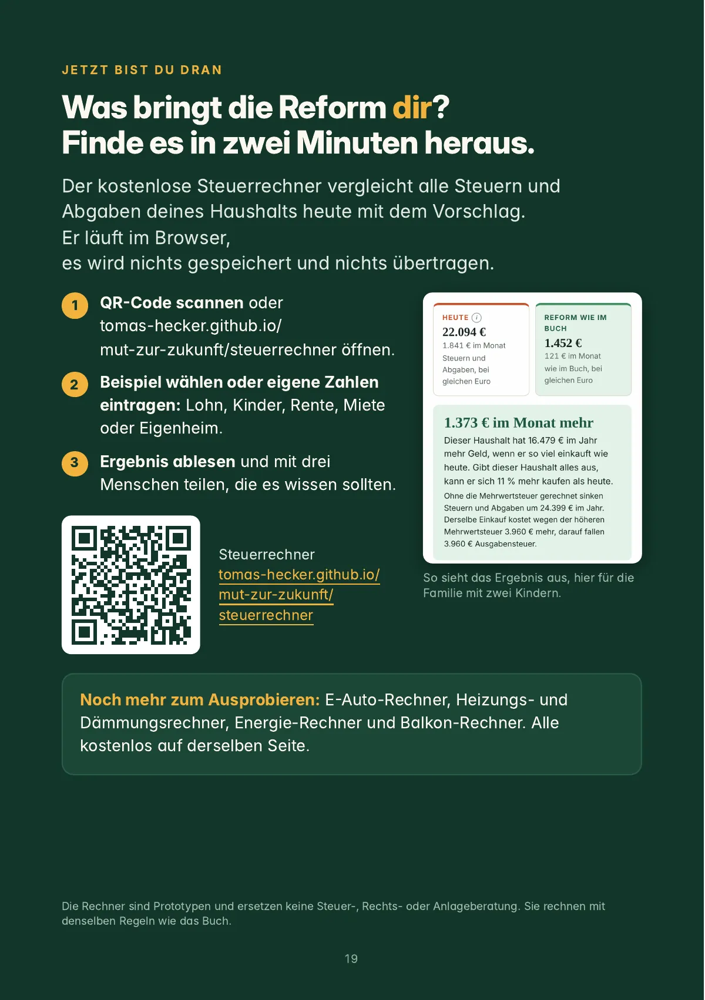
JETZT BIST DU DRAN Was bringt die Reform dir? Finde es in zwei Minuten heraus. Der kostenlose Steuerrechner vergleicht alle Steuern und Abgaben deines Haushalts heute mit dem Vorschlag. Er läuft im Browser, es wird nichts gespeichert und nichts übertragen. 1 QR-Code scannen oder tomas-hecker.github.io/ mut-zur-zukunft/steuerrechner öffnen. 2 Beispiel wählen oder eigene Zahlen eintragen: Lohn, Kinder, Rente, Miete oder Eigenheim. 3 Ergebnis ablesen und mit drei Menschen teilen, die es wissen sollten. Steuerrechner tomas-hecker.github.io/ So sieht das Ergebnis aus, hier für die mut-zur-zukunft/ Familie mit zwei Kindern. steuerrechner Noch mehr zum Ausprobieren: E-Auto-Rechner, Heizungs- und Dämmungsrechner, Energie-Rechner und Balkon-Rechner. Alle kostenlos auf derselben Seite. Die Rechner sind Prototypen und ersetzen keine Steuer-, Rechts- oder Anlageberatung. Sie rechnen mit denselben Regeln wie das Buch. 19
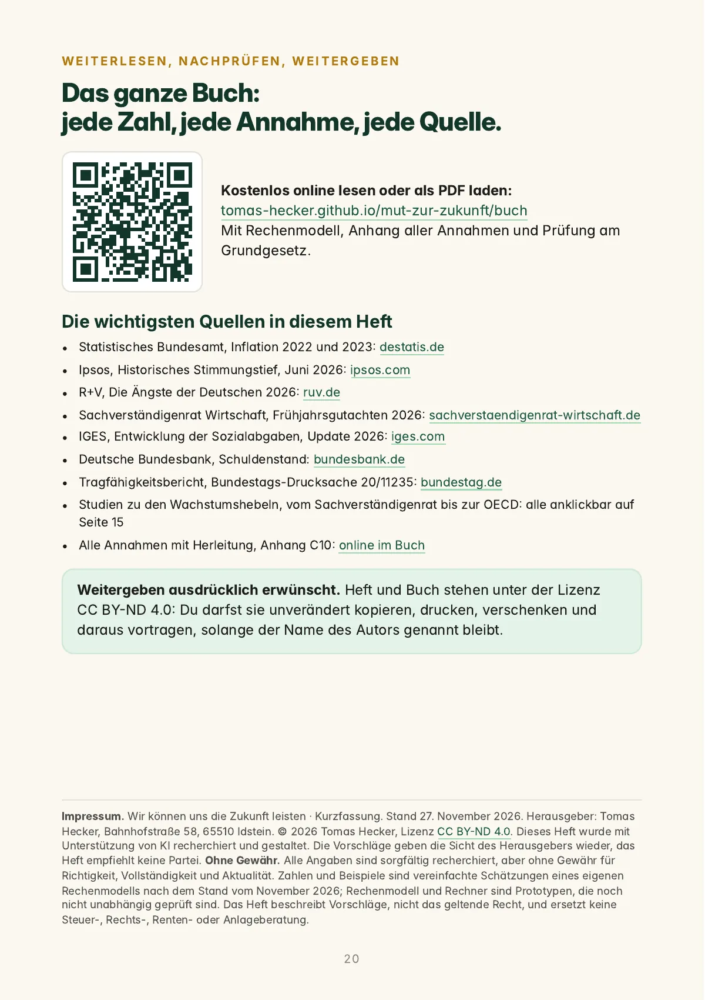
W E I T E R L E S E N , N AC H P R Ü F E N , W E I T E R G E B E N Das ganze Buch: jede Zahl, jede Annahme, jede Quelle. Kostenlos online lesen oder als PDF laden: tomas-hecker.github.io/mut-zur-zukunft/buch Mit Rechenmodell, Anhang aller Annahmen und Prüfung am Grundgesetz. Die wichtigsten Quellen in diesem Heft Statistisches Bundesamt, Inflation 2022 und 2023: destatis.de Ipsos, Historisches Stimmungstief, Juni 2026: ipsos.com R+V, Die Ängste der Deutschen 2026: ruv.de Sachverständigenrat Wirtschaft, Frühjahrsgutachten 2026: sachverstaendigenrat-wirtschaft.de IGES, Entwicklung der Sozialabgaben, Update 2026: iges.com Deutsche Bundesbank, Schuldenstand: bundesbank.de Tragfähigkeitsbericht, Bundestags-Drucksache 20/11235: bundestag.de Studien zu den Wachstumshebeln, vom Sachverständigenrat bis zur OECD: alle anklickbar auf Seite 15 Alle Annahmen mit Herleitung, Anhang C10: online im Buch Weitergeben ausdrücklich erwünscht. Heft und Buch stehen unter der Lizenz CC BY-ND 4.0: Du darfst sie unverändert kopieren, drucken, verschenken und daraus vortragen, solange der Name des Autors genannt bleibt. Impressum. Wir können uns die Zukunft leisten · Kurzfassung. Stand 27. November 2026. Herausgeber: Tomas Hecker, Bahnhofstraße 58, 65510 Idstein. © 2026 Tomas Hecker, Lizenz CC BY-ND 4.0. Dieses Heft wurde mit Unterstützung von KI recherchiert und gestaltet. Die Vorschläge geben die Sicht des Herausgebers wieder, das Heft empfiehlt keine Partei. Ohne Gewähr. Alle Angaben sind sorgfältig recherchiert, aber ohne Gewähr für Richtigkeit, Vollständigkeit und Aktualität. Zahlen und Beispiele sind vereinfachte Schätzungen eines eigenen Rechenmodells nach dem Stand vom November 2026; Rechenmodell und Rechner sind Prototypen, die noch nicht unabhängig geprüft sind. Das Heft beschreibt Vorschläge, nicht das geltende Recht, und ersetzt keine Steuer-, Rechts-, Renten- oder Anlageberatung. 20
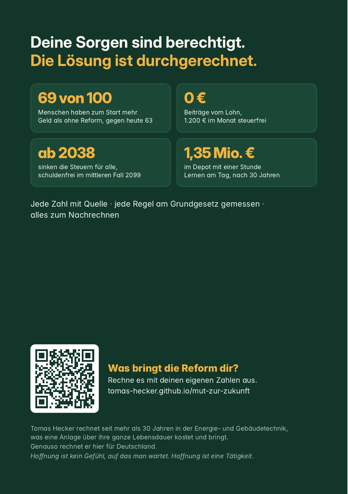
Deine Sorgen sind berechtigt. Die Lösung ist durchgerechnet. 72 von 100 0€ Menschen haben zum Start mehr Beiträge vom Lohn, Geld als ohne Reform, gegen heute 67 1.200 € im Monat steuerfrei ab 2038 1,35 Mio. € sinken die Steuern für alle, im Depot mit einer Stunde schuldenfrei im mittleren Fall 2095 Lernen am Tag, nach 30 Jahren Jede Zahl mit Quelle · jede Regel am Grundgesetz gemessen · alles zum Nachrechnen Was bringt die Reform dir? Rechne es mit deinen eigenen Zahlen aus. tomas-hecker.github.io/mut-zur-zukunft Tomas Hecker rechnet seit mehr als 30 Jahren in der Energie- und Gebäudetechnik, was eine Anlage über ihre ganze Lebensdauer kostet und bringt. Genauso rechnet er hier für Deutschland. Hoffnung ist kein Gefühl, auf das man wartet. Hoffnung ist eine Tätigkeit.